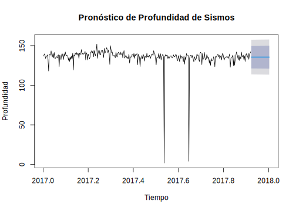
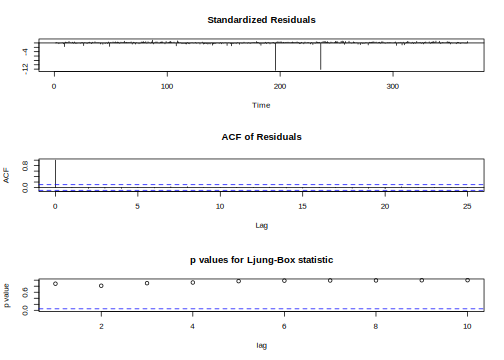
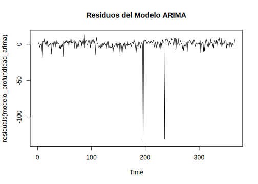
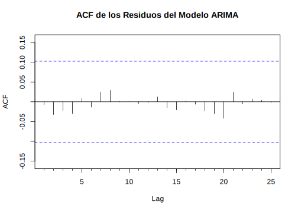
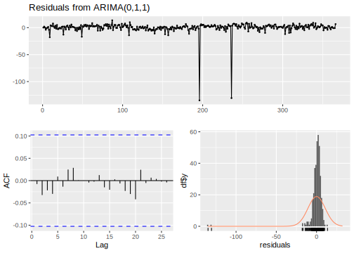

6.2 Profundidad
P_indice.ts2 <- head(P_indice.ts, -30)
# Ajustar el modelo ARIMA
modelo_profundidad_arima <- auto.arima(P_indice.ts2)
# Resumen del modelo
summary(modelo_profundidad_arima)## Series: P_indice.ts2
## ARIMA(0,1,1)
##
## Coefficients:
## ma1
## -0.9695
## s.e. 0.0143
##
## sigma^2 = 124.6: log likelihood = -1284.47
## AIC=2572.94 AICc=2572.98 BIC=2580.57
##
## Training set error measures:
## ME RMSE MAE MPE MAPE MASE ACF1
## Training set -0.08478686 11.1297 4.121583 -31.59247 34.47417 NaN -0.007245018El modelo ARIMA(0,1,1) ajustado para la serie temporal P_indice.ts2 (profundidad) muestra que el término de media móvil es significativo y que el modelo ha capturado adecuadamente las dependencias temporales, como lo indica la baja autocorrelación en los residuos.
# Hacer predicciones para los próximos 4 meses utilizando la función forecast del paquete forecast
pronostico_profundidad_arima <- forecast::forecast(modelo_profundidad_arima, h=30)
# Graficar las predicciones
plot(pronostico_profundidad_arima, main="Pronóstico de Profundidad de Sismos", ylab="Profundidad", xlab="Tiempo")
En la serie temporal, la mayoría de los sismos ocurren a profundidades cercanas a 145 km, con algunas anomalías de eventos sísmicos a profundidades significativamente menores, sin embargo dado el contexto no se consideran datos atipicos o anomalias. El pronóstico, representado por la línea azul y las bandas de confianza sombreadas en gris claro y oscuro (al 80% y 95%, respectivamente), indica que se espera que las profundidades de los sismos se mantengan en niveles similares a los observados anteriormente, alrededor de 145 km.
# Ajustar el modelo ARIMA automáticamente
modelo_profundidad_arima <- auto.arima(sismo_4_max_completo_filtrado$MIN_PROFUNDIDAD)
# Mostrar el resumen del modelo
summary(modelo_profundidad_arima)## Series: sismo_4_max_completo_filtrado$MIN_PROFUNDIDAD
## ARIMA(0,1,1)
##
## Coefficients:
## ma1
## -0.9667
## s.e. 0.0135
##
## sigma^2 = 115.4: log likelihood = -1385.44
## AIC=2774.87 AICc=2774.91 BIC=2782.67
##
## Training set error measures:
## ME RMSE MAE MPE MAPE MASE
## Training set 0.04955531 10.71536 4.016825 -28.90284 31.8042 0.7223793
## ACF1
## Training set -0.007641542El modelo ARIMA para profundidad muestra que los residuos no presentan autocorrelación significativa y el coeficiente MA1 es altamente significativo. Sin embargo, las métricas de error indican que las predicciones tienen un margen de error considerable.

# Gráfico de los residuos
plot(residuals(modelo_profundidad_arima), main="Residuos del Modelo ARIMA")
# ACF de los residuos
Acf(residuals(modelo_profundidad_arima), main="ACF de los Residuos del Modelo ARIMA")
El modelo ha capturado adecuadamente las dependencias temporales en los datos. A pesar de estos valores atípicos debido a los datos de análisis, la mayoría de los residuos se mantienen estables y cercanos a cero, confirmando que el modelo ARIMA es adecuado en su ajuste.

##
## Ljung-Box test
##
## data: Residuals from ARIMA(0,1,1)
## Q* = 1.5562, df = 9, p-value = 0.9967
##
## Model df: 1. Total lags used: 10En la parte superior, la serie temporal de los residuos muestra que la mayoría de los residuos están cercanos a cero. La gráfica ACF (abajo a la izquierda) muestra que las autocorrelaciones de los residuos están dentro de las bandas de confianza, lo que sugiere que no hay autocorrelación significativa en los residuos, indicando un buen ajuste del modelo. Finalmente, el histograma de los residuos (abajo a la derecha) muestra una distribución aproximadamente normal, aunque con una ligera asimetría y algunos valores extremos.
# Residuos del modelo
residuales_profundidad_arima <- residuals(modelo_profundidad_arima)
# Prueba de Shapiro-Wilk para normalidad
shapiro.test(residuales_profundidad_arima)##
## Shapiro-Wilk normality test
##
## data: residuales_profundidad_arima
## W = 0.32756, p-value < 2.2e-16##
## Box-Ljung test
##
## data: residuales_profundidad_arima
## X-squared = 0.021548, df = 1, p-value = 0.8833El test de Shapiro-Wilk tiene un estadístico W de 0.32756 y un p-valor menor a 2.2e-16, lo que indica que los residuos no siguen una distribución normal. Por otro lado, el test de Box-Ljung tiene un valor de chi-cuadrado de 0.021548 con 1 grado de libertad y un p-valor de 0.8833, sugiriendo que no hay autocorrelación significativa en los residuos.